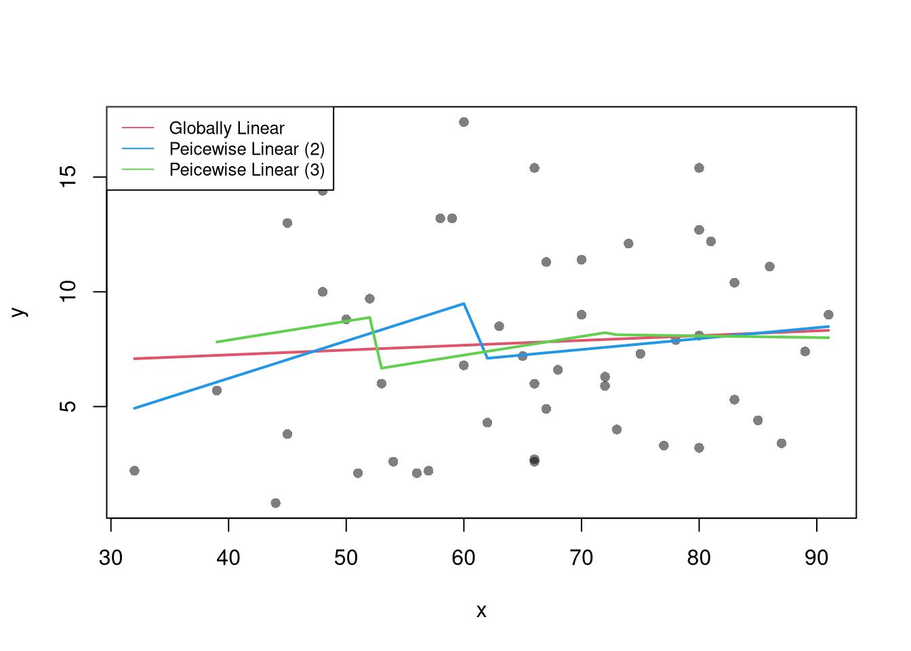

7 Ordinary Least Squares
7.1 Simple OLS (linear regression)
Model and objective \[ y_i=\alpha+\beta x_i+\epsilon_{i} \\ \epsilon_{i} = y_i - [\alpha+\beta x_i]\\ min_{\beta} \sum_{i=1}^{n} (\epsilon_{i})^2 \]
Point Estimates \[ \hat{\alpha}=\bar{y}-\hat{\beta}\bar{x} = \widehat{\mathbb{E}}[Y] - \hat{\beta} \widehat{\mathbb{E}}[X] \\ \hat{\beta}=\frac{\sum_{i}^{}(x_i-\bar{x})(y_i-\bar{y})}{\sum_{i}^{}(x_i-\bar{x})^2} = \frac{\widehat{Cov}[X,Y]}{\widehat{\mathbb{V}}[X]}\\ \hat{y}_i=\hat{\alpha}+\hat{\beta}x_i\\ \hat{\epsilon}_i=y_i-\hat{y}_i\\ \]
## Generate Dataset
xy <- USArrests[,c('Murder','UrbanPop')]
colnames(xy) <- c('y','x')
## Plot Data
plot(y~x, xy, col=grey(.5,.5), pch=16)
## Estimate Regression Coefficeints
reg <- lm(y~x, dat=xy)
reg ##
## Call:
## lm(formula = y ~ x, data = xy)
##
## Coefficients:
## (Intercept) x
## 6.41594 0.02093## (Intercept) x
## 6.41594246 0.02093466
To measure the ‘’Goodness of fit’’, we analyze sums of squared errors (Total, Explained, and Residual) as \[ \underbrace{\sum_{i}(y_i-\bar{y})^2}_\text{TSS}=\underbrace{\sum_{i}(\hat{y}_i-\bar{y})^2}_\text{ESS}+\underbrace{\sum_{i}\hat{\epsilon_{i}}^2}_\text{RSS}\\ R^2 = \frac{ESS}{TSS}=1-\frac{RSS}{TSS} \] Note that \(R^2\) is also called the coefficient of determination.
## Manually Compute Goodness of Fit
Ehat <- resid(reg)
RSS <- sum(Ehat^2)
Y <- xy$y
TSS <- sum((Y-mean(Y))^2)
R2 <- 1 - RSS/TSS
R2## [1] 0.00484035## [1] 0.004840357.1.1 Variability Estimates
A regression coefficient is a statistic. And, just like all statistics, we can calculate
- standard deviation: variability within a single sample.
- standard error: variability across different samples.
- confidence interval: range your statistic varies across different samples.
- null distribution: the sampling distribution of the statistic under the null hypothesis (assuming your null hypothesis was true).
- p-value the probability you would see something as extreme as your statistic when sampling from the null distribution.
To calculate these variability statistics, we will estimate variabilty using data-driven methods.1
We first consider the simplest, the jackknife. In this procedure, we loop through each row of the dataset. And, in each iteration of the loop, we drop that observation from the dataset and reestimate the statistic of interest. We then calculate the standard deviation of the statistic across all ``resamples’’.
## Example 1 Continued
## Jackknife Standard Errors for Beta
jack_regs <- lapply(1:nrow(xy), function(i){
xy_i <- xy[-i,]
reg_i <- lm(y~x, dat=xy_i)
})
jack_coefs <- sapply(jack_regs, coef)['x',]
jack_mean <- mean(jack_coefs)
jack_se <- sd(jack_coefs)
## Jackknife Confidence Intervals
jack_ci_percentile <- quantile(jack_coefs, probs=c(.025,.975))
hist(jack_coefs, breaks=25,
main=paste0('SE est. = ', round(jack_se,4)),
xlab=expression(beta[-i]))
abline(v=jack_mean, col="red", lwd=2)
abline(v=jack_ci_percentile, col="red", lty=2)
## Plot Full-Sample Estimate
## abline(v=coef(reg)['x'], lty=1, col='blue', lwd=2)
## Plot Normal Approximation
## jack_ci_normal <- jack_mean+c(-1.96, +1.96)*jack_se
## abline(v=jack_ci_normal, col="red", lty=3)There are several other resampling techniques. We consider the other main one, the bootstrap, which resamples with replacement for an arbitrary number of iterations. When bootstrapping a dataset with \(n\) observations, you randomly resample all \(n\) rows in your data set \(B\) times.
| Sample Size per Iteration | Number of Iterations | Resample | |
|---|---|---|---|
| Bootstrap | \(n\) | \(B\) | With Replacement |
| Jackknife | \(n-1\) | \(n\) | Without Replacement |
## Bootstrap Standard Errors for Beta
boots <- 1:399
boot_regs <- lapply(boots, function(b){
b_id <- sample( nrow(xy), replace=T)
xy_b <- xy[b_id,]
reg_b <- lm(y~x, dat=xy_b)
})
boot_coefs <- sapply(boot_regs, coef)['x',]
boot_mean <- mean(boot_coefs)
boot_se <- sd(boot_coefs)
## Bootstrap Confidence Intervals
boot_ci_percentile <- quantile(boot_coefs, probs=c(.025,.975))
hist(boot_coefs, breaks=25,
main=paste0('SE est. = ', round(boot_se,4)),
xlab=expression(beta[b]))
abline(v=boot_mean, col="red", lwd=2)
abline(v=boot_ci_percentile, col="red", lty=2)
## Normal Approximation
## boot_ci_normal <- boot_mean+c(-1.96, +1.96)*boot
## Parametric CI
## x <- data.frame(x=quantile(xy$x,probs=seq(0,1,by=.1)))
## ci <- predict(reg, interval='confidence', newdata=data.frame(x))
## polygon( c(x, rev(x)), c(ci[,'lwr'], rev(ci[,'upr'])), col=grey(0,.2), border=0)We can also bootstrap other statistics, such as a t-statistic or \(R^2\). We do such things to test a null hypothesis, which is often ``no relationship’’. We are rarely interested in computing standard errrors and conducting hypothesis tests for two variables. However, we work through the ideas in the two-variable case to better understand the multi-variable case.
7.1.2 Hypothesis Tests
There are two main ways to conduct a hypothesis test.
Invert a CI One main way to conduct hypothesis tests is to examine whether a confidence interval contains a hypothesized value. Often, this is \(0\).
## Example 1 Continued Yet Again
## Bootstrap Distribution
boot_ci_percentile <- quantile(boot_coefs, probs=c(.025,.975))
hist(boot_coefs, breaks=25,
main=paste0('SE est. = ', round(boot_se,4)),
xlab=expression(beta[b]),
xlim=range(c(0, boot_coefs)) )
abline(v=boot_ci_percentile, lty=2)
abline(v=0, col="red", lwd=2)
Impose the Null We can also compute a null distribution using data-driven methods that assume much less about the data generating process. We focus on the simplest, the bootstrap, where loop through a large number of simulations. In each iteration of the loop, we drop impose the null hypothesis and reestimate the statistic of interest. We then calculate the standard deviation of the statistic across all ``resamples’’.
## Example 1 Continued Again
## Null Distribution for Beta
boots <- 1:399
boot_regs0 <- lapply(boots, function(b){
xy_b <- xy
xy_b$y <- sample( xy_b$y, replace=T)
reg_b <- lm(y~x, dat=xy_b)
})
boot_coefs0 <- sapply(boot_regs0, coef)['x',]
## Null Bootstrap Distribution
boot_ci_percentile0 <- quantile(boot_coefs0, probs=c(.025,.975))
hist(boot_coefs0, breaks=25, main='',
xlab=expression(beta[b]),
xlim=range(c(boot_coefs0, coef(reg)['x'])))
abline(v=boot_ci_percentile0, lty=2)
abline(v=coef(reg)['x'], col="red", lwd=2)
Regardless of how we calculate standard errors, we can use them to conduct a t-test. We also compute the distribution of t-values under the null hypothesis, and compare how extreme the oberved value is. \[ \hat{t} = \frac{\hat{\beta} - \beta_{0} }{\hat{\sigma}_{\hat{\beta}}} \]
## T Test
B0 <- 0
boot_t <- (coef(reg)['x']-B0)/boot_se
## Compute Bootstrap T-Values (without refinement)
boot_t_boot0 <- sapply(boot_regs0, function(reg_b){
beta_b <- coef(reg_b)[['x']]
t_hat_b <- (beta_b)/boot_se
return(t_hat_b)
})
hist(boot_t_boot0, breaks=100,
main='Bootstrapped t values', xlab='t',
xlim=range(c(boot_t_boot0, boot_t)) )
abline(v=boot_t, lwd=2, col='red')
From this, we can calculate a p-value: the probability you would see something as extreme as your statistic under the null (assuming your null hypothesis was true). Note that the \(p\) reported by your computer does not necessarily satisfy this definition. We can always calcuate a p-value from an explicit null distribution.
## One Sided Test for P(t > boot_t | Null)=1- P(t < boot_t | Null)
That_NullDist1 <- ecdf(boot_t_boot0)
Phat1 <- 1-That_NullDist1(boot_t)
## Two Sided Test for P(t > jack_t or t < -jack_t | Null)
That_NullDist2 <- ecdf(abs(boot_t_boot0))
plot(That_NullDist2, xlim=range(boot_t_boot0, boot_t))
abline(v=quantile(That_NullDist2,probs=.95), lty=3)
abline(v=boot_t, col='red')
## [1] 0.6265664Under some assumptions, the null distribution is distributed \(t_{n-2}\). (For more on parametric t-testing based on statistical theory, see https://www.econometrics-with-r.org/4-lrwor.html.)
7.1.3 Prediction Intervals
In addition to confidence intervales, we can also compute a prediction interval which estimates the range of variability across different samples for the outcomes. These intervals also take into account the residuals— the variability of individuals around the mean.
## Bootstrap Prediction Interval
boot_resids <- lapply(boot_regs, function(reg_b){
e_b <- resid(reg_b)
x_b <- reg_b$model$x
res_b <- cbind(e_b, x_b)
})
boot_resids <- as.data.frame(do.call(rbind, boot_resids))
## Homoskedastic
ehat <- quantile(boot_resids$e_b, probs=c(.025, .975))
x <- quantile(xy$x,probs=seq(0,1,by=.1))
boot_pi <- coef(reg)[1] + x*coef(reg)['x']
boot_pi <- cbind(boot_pi + ehat[1], boot_pi + ehat[2])
## Plot Bootstrap PI
plot(y~x, dat=xy, pch=16, main='Prediction Intervals',
ylim=c(-5,20))
polygon( c(x, rev(x)), c(boot_pi[,1], rev(boot_pi[,2])),
col=grey(0,.2), border=NA)
## Parametric PI (For Comparison)
pi <- predict(reg, interval='prediction', newdata=data.frame(x))
lines( x, pi[,'lwr'], lty=2)
lines( x, pi[,'upr'], lty=2)
There are many ways to improve upon the prediction intervals you just created. Probably the most basic way is to allow the residuals to be heteroskedastic.
## Estimate Residual Quantiles seperately around X points
boot_resid_list <- split(boot_resids,
cut(boot_resids$x_b, x) )
boot_resid_est <- lapply(boot_resid_list, function(res_b) {
if( nrow(res_b)==0){ ## If Empty, Return Nothing
ehat <- c(NA,NA)
} else{ ## Estimate Quantiles of Residuals
ehat <- quantile(res_b$e_b, probs=c(.025, .975))
}
return(ehat)
})
boot_resid_est <- do.call(rbind, boot_resid_est)
## Construct PI at x points
boot_x <- x[-1] - diff(x)/2
boot_pi <- coef(reg)[1] + boot_x*coef(reg)['x']
boot_pi <- cbind(boot_pi + boot_resid_est[,1], boot_pi + boot_resid_est[,2])
plot(y~x, dat=xy, pch=16, main='Heteroskedastic P.I.')
polygon( c(boot_x, rev(boot_x)), c(boot_pi[,1], rev(boot_pi[,2])),
col=grey(0,.2), border=NA)
rug(boot_x)
For a nice overview of different types of intervals, see https://www.jstor.org/stable/2685212. For an indepth view, see “Statistical Intervals: A Guide for Practitioners and Researchers” or “Statistical Tolerance Regions: Theory, Applications, and Computation”. See https://robjhyndman.com/hyndsight/intervals/ for constructing intervals for future observations in a time-series context. See Davison and Hinkley, chapters 5 and 6 (also Efron and Tibshirani, or Wehrens et al.)
7.2 OLS (multiple linear regression)
Model and objective \[ y_i=\beta_0+\beta_1x_{i1}+\beta_2x_{i2}+\ldots+\beta_kx_{ik}+\epsilon_i = X_{i}\beta +\epsilon_i \\ min_{\beta} \sum_{i=1}^{n} (\epsilon_i)^2 \] Can also be written in matrix form \[ y=\textbf{X}\beta+\epsilon\\ min_{\beta} (\epsilon' \epsilon) \]
Point Estimates \[ \hat{\beta}=(\textbf{X}'\textbf{X})^{-1}\textbf{X}'y \]
2 Before fitting the model to your data, create a summary plot
## Murder Assault UrbanPop Rape
## Alabama 13.2 236 58 21.2
## Alaska 10.0 263 48 44.5
## Arizona 8.1 294 80 31.0
## Arkansas 8.8 190 50 19.5
## California 9.0 276 91 40.6
## Colorado 7.9 204 78 38.7## Simple Plot
#plot(Assault~UrbanPop, USArrests, col=grey(0,.5), pch=16,
# cex=USArrests$Murder/diff(range(USArrests$Murder))*2,
# main='US Murder arrests (per 100,000)')
# Superior Plot
USArrests$ID <- rownames(USArrests)
fig <- plotly::plot_ly(
USArrests, x = ~UrbanPop, y = ~Assault,
text = ~paste('<b>', ID, '</b>',
"<br>Urban :", UrbanPop,
"<br>Assault:", Assault,
"<br>Murder :", Murder),
mode='markers',
type='scatter',
hoverinfo='text',
color=~Murder,
showlegend=F,
marker=list(
size=~Murder,
opacity=0.5,
showscale=T,
colorbar = list(title='Murder Arrests (per 100,000)')))
fig <- plotly::layout(fig,
title='Crime and Urbanization in America 1975',
xaxis = list(title = 'Percent of People in an Urban Area'),
yaxis = list(title = 'Assault Arrests per 100,000 People'))
figNow we can estimate the parameters
## Manually Compute
Y <- USArrests[,'Murder']
X <- USArrests[,c('Assault','UrbanPop')]
X <- as.matrix(cbind(1,X))
XtXi <- solve(t(X)%*%X)
Bhat <- XtXi %*% (t(X)%*%Y)
c(Bhat)## [1] 3.20715340 0.04390995 -0.04451047## (Intercept) Assault UrbanPop
## 3.20715340 0.04390995 -0.04451047To measure the ``Goodness of fit’’ of the model, we can again compute sums of squared srrors. Adding random data may sometimes improve the fit, however, so we adjust the \(R^2\) by the number of covariates \(K\). \[ R^2 = \frac{ESS}{TSS}=1-\frac{RSS}{TSS}\\ R^2_{\text{adj.}} = 1-\frac{n-1}{n-K}(1-R^2) \]
ksims <- 1:30
for(k in ksims){
USArrests[,paste0('R',k)] <- runif(nrow(USArrests),0,20)
}
reg_sim <- lapply(ksims, function(k){
rvars <- c('Assault','UrbanPop', paste0('R',1:k))
rvars2 <- paste0(rvars, collapse='+')
reg_k <- lm( paste0('Murder~',rvars2), data=USArrests)
})
R2_sim <- sapply(reg_sim, function(reg_k){ summary(reg_k)$r.squared })
R2adj_sim <- sapply(reg_sim, function(reg_k){ summary(reg_k)$adj.r.squared })
plot.new()
plot.window(xlim=c(0,30), ylim=c(0,1))
points(ksims, R2_sim)
points(ksims, R2adj_sim, pch=16)
axis(1)
axis(2)
mtext(expression(R^2),2, line=3)
mtext('Additional Random Covariates', 1, line=3)
legend('topleft', horiz=T,
legend=c('Undjusted', 'Adjusted'), pch=c(1,16))
7.2.1 Variability Estimates and Hypothesis Tests
To estimate the variability of our estimates, we can use the same data-driven methods introduced with simple OLS.
## Bootstrap SE's
boots <- 1:399
boot_regs <- lapply(boots, function(b){
b_id <- sample( nrow(USArrests), replace=T)
xy_b <- USArrests[b_id,]
reg_b <- lm(Murder~Assault+UrbanPop, dat=xy_b)
})
boot_coefs <- sapply(boot_regs, coef)
boot_mean <- apply(boot_coefs,1, mean)
boot_se <- apply(boot_coefs,1, sd)Also as before, we can conduct independant hypothesis tests.3 We can conduct joint tests, such as whether two coefficients are equal, by looking at the their joint distribution.
boot_coef_df <- as.data.frame(cbind(ID=boots, t(boot_coefs)))
fig <- plotly::plot_ly(boot_coef_df,
type = 'scatter', mode = 'markers',
x = ~UrbanPop, y = ~Assault,
text = ~paste('<b> boot: ', ID, '</b>'),
hoverinfo='text',
showlegend=F,
marker=list( color='rgba(0, 0, 0, 0.5)'))
fig## Show Histogram of Coefficients
## plotly::add_histogram2d(fig, nbinsx=20, nbinsy=20)
## Show 95% Contour
## plotly::add_histogram2dcontour(fig)
## fig <- layout(fig,
## yaxis = list(title=expression(beta[3])),
## xaxis = list(title=expression(beta[2])))We can also use an \(F\) test for \(q\) hypotheses; \[ \hat{F}_{q} = \frac{(ESS_{restricted}-ESS_{unrestricted})/q}{ESS_{unrestricted}/(n-K)}, \] and \(\hat{F}\) can be written in terms of unrestricted and restricted \(R^2\). Under some additional assumptions \(\hat{F}_{q} \sim F_{q,n-K}\). For some inuition, we will examine how the \(R^2\) statistic varies with bootstrap samples. Specifically, compute a null \(R^2\) distribution by randomly reshuffling the outcomes and compare it to the observed \(R^2\).
## Bootstrap NULL
boots <- 1:399
boot_regs0 <- lapply(boots, function(b){
xy_b <- USArrests
b_id <- sample( nrow(USArrests), replace=T)
xy_b$Murder <- xy_b$Murder[b_id]
reg_b <- lm(Murder~Assault+UrbanPop, dat=xy_b)
})
boot_coefs0 <- sapply(boot_regs0, function(reg_k){
coef(reg_k) })
R2_sim0 <- sapply(boot_regs0, function(reg_k){
summary(reg_k)$r.squared })
R2adj_sim0 <- sapply(boot_regs0, function(reg_k){
summary(reg_k)$adj.r.squared })
hist(R2adj_sim0, xlim=c(0,1), breaks=25,
main='', xlab=expression('adj.'~R[b]^2))
abline(v=summary(reg)$adj.r.squared, col="red", lwd=2)
Hypothesis Testing is not to be done routinely and additional complications arise when testing multiple hypothesis.
7.3 Coefficient Interpretation
Notice that we have gotten pretty far without actually trying to meaningfully interpret regression coefficients. That is because the above procedure will always give us number, regardless as to whether the true data generating process is linear or not. So, to be cautious, we have been interpretting the regression outputs while being agnostic as to how the data are generated. We now consider a special situation where we know the data are generated according to a linear process and are only uncertain about the parameter values.
If the data generating process is \[ y=X\beta + \epsilon\\ \mathbb{E}[\epsilon | X]=0, \] then we have a famous result that lets us attach a simple interpretation of OLS coefficients as unbiased estimates of the effect of X: \[ \hat{\beta} = (X'X)^{-1}X'y = (X'X)^{-1}X'(X\beta + \epsilon) = \beta + (X'X)^{-1}X'\epsilon\\ \mathbb{E}\left[ \hat{\beta} \right] = \mathbb{E}\left[ (X'X)^{-1}X'y \right] = \beta + (X'X)^{-1}\mathbb{E}\left[ X'\epsilon \right] = \beta \]
Generate a simulated dataset with 30 observations and two exogenous variables. Assume the following relationship: \(y_{i} = \beta_0 + \beta_1 x_{1,i} + \beta_2 x_{2,i} + \epsilon_i\) where the variables and the error term are realizations of the following data generating processes (DGP):
N <- 30
B <- c(10, 2, -1)
x1 <- runif(N, 0, 5)
x2 <- rbinom(N,1,.7)
X <- cbind(1,x1,x2)
e <- rnorm(N,0,3)
Y <- X%*%B + e
dat <- data.frame(Y,X)
coef(lm(Y~x1+x2, data=dat))## (Intercept) x1 x2
## 12.606580 1.389561 -1.997947Simulate the distribution of coefficients under a correctly specified model. Interpret the average.
N <- 30
B <- c(10, 2, -1)
Coefs <- sapply(1:400, function(sim){
x1 <- runif(N, 0, 5)
x2 <- rbinom(N,1,.7)
X <- cbind(1,x1,x2)
e <- rnorm(N,0,3)
Y <- X%*%B + e
dat <- data.frame(Y,x1,x2)
coef(lm(Y~x1+x2, data=dat))
})
par(mfrow=c(1,2))
for(i in 2:3){
hist(Coefs[i,], xlab=bquote(beta[.(i)]), main='')
abline(v=mean(Coefs[i,]), col=1, lty=2)
abline(v=B[i], col=2)
}
Many economic phenomena are nonlinear, even when including potential transforms of \(Y\) and \(X\). Sometimes the linear model may still be a good or even great approximation (how good depends on the research question). In any case, you are safe to interpret your OLS coefficients as “conditional correlations”. For example, examine the distribution of coefficients under this mispecified model. Interpret the average.
N <- 30
Coefs <- sapply(1:600, function(sim){
x1 <- runif(N, 0, 5)
x2 <- rbinom(N,1,.7)
e <- rnorm(N,0,3)
Y <- 10*x2 + 2*log(x1)^x2 + e
dat <- data.frame(Y,x1,x2)
coef(lm(Y~x1+x2, data=dat))
})
par(mfrow=c(1,2))
for(i in 2:3){
hist(Coefs[i,], xlab=bquote(beta[.(i)]), main='')
abline(v=mean(Coefs[i,]), col=1, lty=2)
}
7.4 Factor Variables
So far, we have discussed cardinal data where the difference between units always means the same thing: e.g., \(4-3=2-1\). There are also factor variables
- Ordered: refers to Ordinal data. The difference between units means something, but not always the same thing. For example, \(4th - 3rd \neq 2nd - 1st\).
- Unordered: refers to Categorical data. The difference between units is meaningless. For example, \(B-A=?\)
To analyze either factor, we often convert them into indicator variables or dummies; \(D_{c}=\mathbf{1}( Factor = c)\). One common case is if you have observations of individuals over time periods, then you may have two factor variables. An unordered factor that indicates who an individual is; for example \(D_{i}=\mathbf{1}( Individual = i)\), and an order factor that indicates the time period; for example \(D_{t}=\mathbf{1}( Time \in [month~ t, month~ t+1) )\). There are many other cases you see factor variables, including spatial ID’s in purely cross sectional data.
Be careful not to handle categorical data as if they were cardinal. E.g., generate city data with Leipzig=1, Lausanne=2, LosAngeles=3, … and then include city as if it were a cardinal number (that’s a big no-no). The same applied to ordinal data; PopulationLeipzig=2, PopulationLausanne=3, PopulationLosAngeles=1.
N <- 1000
x <- runif(N,3,8)
e <- rnorm(N,0,0.4)
fo <- factor(rbinom(N,4,.5), ordered=T)
fu <- factor(rep(c('A','B'),N/2), ordered=F)
dA <- 1*(fu=='A')
y <- (2^as.integer(fo)*dA )*sqrt(x)+ 2*as.integer(fo)*e
dat_f <- data.frame(y,x,fo,fu)With factors, you can still include them in the design matrix of an OLS regression \[ y_{it} = x_{it} \beta_{x} + d_{c}\beta_{c} \] When, as commonly done, the factors are modeled as being additively seperable, they are modelled as either “fixed” or “random” effects.
Simply including the factors into the OLS regression yields a “dummy variable” fixed effects estimator.
##
## Call:
## lm(formula = y ~ x + fo + fu, data = dat_f)
##
## Residuals:
## Min 1Q Median 3Q Max
## -41.578 -5.786 -0.343 5.873 41.784
##
## Coefficients:
## Estimate Std. Error t value Pr(>|t|)
## (Intercept) 20.1570 1.2357 16.312 < 2e-16 ***
## x 1.1094 0.2062 5.382 9.21e-08 ***
## fo.L 26.9798 1.1008 24.509 < 2e-16 ***
## fo.Q 10.9075 0.9675 11.273 < 2e-16 ***
## fo.C 2.5067 0.7603 3.297 0.00101 **
## fo^4 1.0508 0.5796 1.813 0.07014 .
## fuB -23.3776 0.6060 -38.578 < 2e-16 ***
## ---
## Signif. codes: 0 '***' 0.001 '**' 0.01 '*' 0.05 '.' 0.1 ' ' 1
##
## Residual standard error: 9.565 on 993 degrees of freedom
## Multiple R-squared: 0.7072, Adjusted R-squared: 0.7055
## F-statistic: 399.8 on 6 and 993 DF, p-value: < 2.2e-16We can also compute averages for each group and construct a “between estimator” \[ \overline{y}_i = \alpha + \overline{x}_i \beta \] Or we can subtract the average from each group to construct a “within estimator”, \[ (y_{it} - \overline{y}_i) = (x_{it}-\overline{x}_i)\beta\\ \] that tends to be more computationally efficient, has corrections for standard errors, and has additional summary statistics.
## OLS estimation, Dep. Var.: y
## Observations: 1,000
## Fixed-effects: fo: 5, fu: 2
## Standard-errors: Clustered (fo)
## Estimate Std. Error t value Pr(>|t|)
## x 1.10943 0.331476 3.34696 0.02865 *
## ---
## Signif. codes: 0 '***' 0.001 '**' 0.01 '*' 0.05 '.' 0.1 ' ' 1
## RMSE: 9.53171 Adj. R2: 0.705459
## Within R2: 0.028339## x fo0 fo1 fo2 fo3 fo4 fuB
## 1.109435 8.256715 9.793111 15.080267 23.685900 43.969155 -23.377596## $fo
## 0 1 2 3 4
## 8.256715 9.793111 15.080267 23.685900 43.969155
##
## $fu
## A B
## 0.0000 -23.3776
##
## attr(,"class")
## [1] "fixest.fixef" "list"
## attr(,"references")
## fo fu
## 0 1
## attr(,"exponential")
## [1] FALSEHansen Econometrics, Theorem 17.1: The fixed effects estimator of \(\beta\) algebraically equals the dummy variable estimator of \(\beta\). The two estimators have the same residuals.
Consistency is a great property, but only if the data generating process does in fact match the model. Many factor variables have effects that are not additively seperable.
## OLS estimation, Dep. Var.: y
## Observations: 1,000
## Fixed-effects: fo^fu: 10
## Standard-errors: Clustered (fo^fu)
## Estimate Std. Error t value Pr(>|t|)
## x 1.22322 0.535401 2.28469 0.048192 *
## ---
## Signif. codes: 0 '***' 0.001 '**' 0.01 '*' 0.05 '.' 0.1 ' ' 1
## RMSE: 3.50489 Adj. R2: 0.960014
## Within R2: 0.206319##
## Call:
## lm(formula = y ~ x * fo * fu, data = dat_f)
##
## Residuals:
## Min 1Q Median 3Q Max
## -12.7848 -1.4619 -0.0449 1.4369 12.6309
##
## Coefficients:
## Estimate Std. Error t value Pr(>|t|)
## (Intercept) 14.377200 0.597094 24.079 < 2e-16 ***
## x 2.641420 0.106617 24.775 < 2e-16 ***
## fo.L 28.570256 1.687478 16.931 < 2e-16 ***
## fo.Q 14.044283 1.488539 9.435 < 2e-16 ***
## fo.C 5.096818 1.136156 4.486 8.12e-06 ***
## fo^4 2.054461 0.881046 2.332 0.0199 *
## fuB -14.598316 0.857585 -17.023 < 2e-16 ***
## x:fo.L 4.543685 0.302142 15.038 < 2e-16 ***
## x:fo.Q 1.228910 0.265546 4.628 4.19e-06 ***
## x:fo.C -0.004238 0.203746 -0.021 0.9834
## x:fo^4 -0.211757 0.155012 -1.366 0.1722
## x:fuB -2.615717 0.149238 -17.527 < 2e-16 ***
## fo.L:fuB -28.640533 2.418631 -11.842 < 2e-16 ***
## fo.Q:fuB -12.902095 2.125447 -6.070 1.82e-09 ***
## fo.C:fuB -2.062365 1.658290 -1.244 0.2139
## fo^4:fuB -0.417124 1.261672 -0.331 0.7410
## x:fo.L:fuB -4.577682 0.420396 -10.889 < 2e-16 ***
## x:fo.Q:fuB -1.490077 0.369516 -4.033 5.95e-05 ***
## x:fo.C:fuB -0.530167 0.289197 -1.833 0.0671 .
## x:fo^4:fuB -0.083475 0.220296 -0.379 0.7048
## ---
## Signif. codes: 0 '***' 0.001 '**' 0.01 '*' 0.05 '.' 0.1 ' ' 1
##
## Residual standard error: 2.657 on 980 degrees of freedom
## Multiple R-squared: 0.9777, Adjusted R-squared: 0.9773
## F-statistic: 2262 on 19 and 980 DF, p-value: < 2.2e-16With Random Effects, the factor variable is modelled as coming from a distribution that is uncorrelated with the regressors. This is rarely used in economics today, and mostly included for historical reasons and a few cases where fixed effects cannot be estimates.
7.5 More Literature
For OLS, see
- https://bookdown.org/josiesmith/qrmbook/linear-estimation-and-minimizing-error.html
- https://www.econometrics-with-r.org/4-lrwor.html
- https://www.econometrics-with-r.org/6-rmwmr.html
- https://www.econometrics-with-r.org/7-htaciimr.html
- https://bookdown.org/ripberjt/labbook/bivariate-linear-regression.html
- https://bookdown.org/ripberjt/labbook/multivariable-linear-regression.html
- https://online.stat.psu.edu/stat462/node/137/
- https://book.stat420.org/
- Hill, Griffiths & Lim (2007), Principles of Econometrics, 3rd ed., Wiley, S. 86f.
- Verbeek (2004), A Guide to Modern Econometrics, 2nd ed., Wiley, S. 51ff.
- Asteriou & Hall (2011), Applied Econometrics, 2nd ed., Palgrave MacMillan, S. 177ff.
- https://online.stat.psu.edu/stat485/lesson/11/
For fixed effects, see
For some technical background, see, e.g., https://www.sagepub.com/sites/default/files/upm-binaries/21122_Chapter_21.pdf. Also note that we can compute classic estimates for variability: denoting the Standard Error of the Regression as \(\hat{\sigma}\), and the Standard Error of the Coefficient Estimates as \(\hat{\sigma}_{\hat{\alpha}}\) and \(\hat{\sigma}_{\hat{\beta}}~~\) (or simply Standard Errors). \[ \hat{\sigma}^2 = \frac{1}{n-2}\sum_{i}\hat{\epsilon_{i}}^2\\ \hat{\sigma}^2_{\hat{\alpha}}=\hat{\sigma}^2\left[\frac{1}{n}+\frac{\bar{x}^2}{\sum_{i}(x_i-\bar{x})^2}\right]\\ \hat{\sigma}^2_{\hat{\beta}}=\frac{\hat{\sigma}^2}{\sum_{i}(x_i-\bar{x})^2}. \] These equations are motivated by particular data generating proceses, which you can read more about this at https://www.econometrics-with-r.org/4-lrwor.html.↩︎
To derive OLS coefficients in Matrix form, see * https://jrnold.github.io/intro-methods-notes/ols-in-matrix-form.html * https://www.fsb.miamioh.edu/lij14/411_note_matrix.pdf * https://web.stanford.edu/~mrosenfe/soc_meth_proj3/matrix_OLS_NYU_notes.pdf↩︎
This is done using t-values \[\hat{t}_{j} = \frac{\hat{\beta}_j - \beta_{0} }{\hat{\sigma}_{\hat{\beta}_j}}\]. Under some additional assumptions \(\hat{t}_{j} \sim t_{n-K}\).↩︎